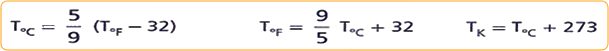

Introducción
El termómetro es un instrumento u operador técnico que fue inventado y fabricado para poder medir la temperatura. Desde su invención ha evolucionado mucho, principalmente desde que se empezaron a fabricar los termómetros electrónicos digitales.
Los termómetros iniciales que se fabricaron se basaban en el principio de la dilatación, por lo que se prefiere el uso de materiales con un coeficiente de dilatación alto de modo que, al aumentar la temperatura, la dilatación del material sea fácilmente visible.
Llena el frasco con una mezcla de agua con colorante y ciérralo.
Usa el gotero para introducir más líquido por el popote, hasta que llenes parte del popote.
Hipótesis
Si varía le temperatura alrededor del frasco entonces cambiará la altura del líquido en el popote porque el líquido se dilatará.
Elige la escala que utilizarás, construye un termómetro y compáralo con el de otros equipos. Responde ¿Cuál es la mejor escala, y cuál, el mejor termómetro? ¿Puedes medir la temperatura de tu cuerpo con este termómetro? ¿Qué relación hay entre las escalas de los otros equipos y la tuya? ¿Puedes expresar estas relaciones en forma numérica?
Además de estas escalas de temperatura, hay otras tres Celsius, que es la que usamos en México y en casi todo e mundo y su unidad es en grados Celsius (°C); Fahrenheit, que se usa en Estados Unidos y su unidad son los grados Fahrenheit (°F); y Kelvin, o escala absoluta, usada por los científicos y su unidad es el Kelvin (K). La escala absoluta se basa en temperatura mínima que se alcanza cuando todas las partículas dejan de moverse. A este punto se le llama cero absoluto. Las relaciones entre estas escalas son:

Con estas relaciones puedes saber cuanto vale la una temperatura en las diferentes escalas.